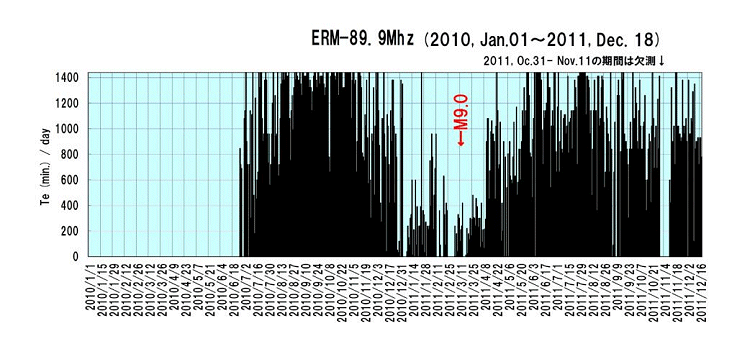
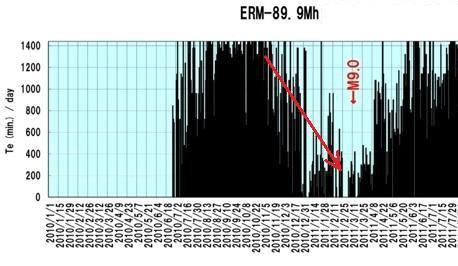
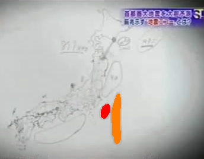
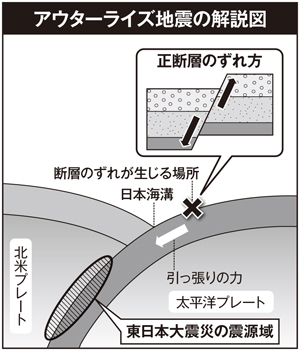
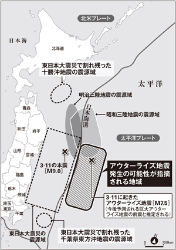
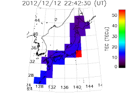

「伊豆・マリアナ、房総、東北アウターライズ」震源域
●【「伊豆・マリアナ、房総、東北アウターライズ」震源域】
『VHF帯電磁波散乱体探査法（地震エコー観測法）による地震予報の研究』
解説：森谷武男 （北海道大学理学院付属地震火山研究観測センター）
 http://nanako.sci.hokudai.ac.jp/~moriya/fm.htm
http://nanako.sci.hokudai.ac.jp/~moriya/fm.htm
『地震エコー』グラフ

『地震エコー』グラフ

↑基本的には"地震エコー"データが、この図のように（ゼロ方向に）収束して行くとヤバイと言うことらしいです（リバウンドもあるので、シロウトには実際の見極めは難しいかもしれませんが…）。
YouTube『地震予知』（北大・森谷武男氏など）
http://www.youtube.com/watch?v=-oQ0sBxFmTc
↑北大・森谷武男氏によれば、マグニチュードはM9クラス、震源域は 下記の画像（『M7超が懸念される「伊豆・マリアナ、房総」震源域』地図）のオレンジの「伊豆・マリアナ」エリア、赤の「房総」エリアと想定している。
また、このマグニチュードは"最大値"と言うことだとすればM9クラスから それ以下、下記（『向こう１カ月、Ｍ７超の余震確率は１５％ 東日本大震災』）の気象庁の発表データも考慮するとM7～M9クラスが想定される。
『M7超が懸念される「伊豆・マリアナ、房総」震源域』地図

2012年01月22日『「アウターライズ地震」が列島を襲う』
http://gendai.ismedia.jp/articles/-/31609
http://gendai.ismedia.jp/articles/-/31609?page=2
http://gendai.ismedia.jp/articles/-/31609?page=3
http://gendai.ismedia.jp/articles/-/31609?page=4
http://gendai.ismedia.jp/articles/-/31609?page=5
『アウターライズ地震』解説図

> 本震（3.11 東日本大震災）の震源域から日本海溝をまたいだ南北約500㎞にわたる地域で、地震の規模も本震(M9.0)に近いM8~9となる可能性が指摘されている（下記『アウターライズ震源域』地図 参照）。また、十勝沖、千葉県東方沖地震の震源域に3・11の〝割れ残り〟があり、この震源域での地震発生も危惧されている。
> もしもこのまま3月11日の地震の前と同じ経過をたどるとすれば、再びM9クラスの地震が発生すると推定されます。震央は宮城県南部沖から茨城県沖の日本海溝南部付近であろうと考えられます。震源メカニズムが正断層である場合には(中略)巨大津波になる可能性が考えられます。
> 警告で震央を『日本海溝南部付近』と書いてしまったため、千葉県東方沖地震がクローズアップされているようだが、最も懸念されるのはアウターライズ地震です。
↑「アウターライズ地震」の方が危険性が高いようだが、「伊豆・マリアナ、房総」エリアも要注意であることに変わりは無い。
『アウターライズ震源域』地図

『電波伝搬障害研究プロジェクト』
http://wdc.nict.go.jp/IONO/
『電波伝搬障害研究プロジェクト』：『Real-time TEC Map over Japan』
http://wdc.nict.go.jp/IONO/HP2009/contents/E011_TECmap.html
『電離層の電子数』地図（2012/12/12 22:42:30）

↑この『電離層の電子数』地図（2012/12/12 22:42:30）から言えば、森谷氏が警告している「房総」エリアの危険度が高いと推定される。
2012年01月31日『東北沖、大地震が起きやすい状態に…震災で変化』
http://www.yomiuri.co.jp/science/news/20120130-OYT1T01342.htm
2011年11月18日『向こう１カ月、Ｍ７超の余震確率は１５％ 東日本大震災』
http://www.asahi.com/science/update/1118/TKY201111180594.html
「東日本大震災の"震源域"や"その周辺"」については下記「動く可能性があるプレート境界」参照。
とくに「黄色の線」のプレート境界に接する（丸で囲まれた）震源域「関東」が動けば、首都圏・直下でプレート境界型・地震が発生することになり、それは喩えて言えば首都圏・直下で核弾頭が炸裂したようなエネルギーと言える。
（参考）
「動く可能性があるプレート境界」
～～～～～～～～～～～～～～～～～～～～～～～～～～～～～～
【参考】
【「首都圏」地震災害】
2012年10月『Ｍ９で最大２４メートルの津波、青森県が被害想定』
http://sankei.jp.msn.com/affairs/news/121002/dst12100221250010-n1.htm
2012年10月『（青森県）住民に驚き、不安 津波浸水予測』
http://mytown.asahi.com/aomori/news.php?k_id=02000001210040001
2012年06月『最大３４・６メートルの津波想定 北海道 震災受け見直し』
http://sankei.jp.msn.com/affairs/news/120628/dst12062819240009-n1.htm